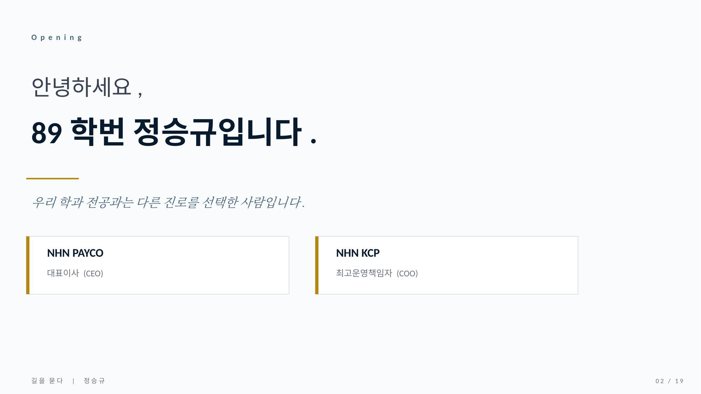
안녕하세요. 농화학과 89학번 정승규입니다.
오늘 이 자리에 초대 받으면서 사실 좀 머쓱했습니다. 제가 후배 여러분께 진로 이야기를 들려주기에 적합한 지 해서요. 앞서 보시다시피 저는 우리 학과 전공과는 다른 진로를 선택한 사람이거든요. 농화학과를 나와서 IT 회사에 들어갔고, 지금은 NHN PAYCO라는 간편결제회사 대표 겸 NHN KCP라는 온오프라인 전자결제 회사의 COO를 겸직하고 있습니다.
그런데 가만히 생각해 보니, 어쩌면 그래서 오늘 제가 드릴 수 있는 이야기가 조금은 있을 것도 같습니다. "전공과는 다른 직업을 선택한 졸업생"이 확고한 비전, 계획이 있었던 게 아닌, 직업과 진로를 고민하고 흔들리고, 결정하고 때론 후회도 하고 선택하면서 30년의 직장생활을 어떻게 해왔는 지 — 그런 이야기가 여러분 중 누군가에게는 작은 위로나 힌트가 될 수 있지 않을까 하는 마음으로 이 자리에 섰습니다.
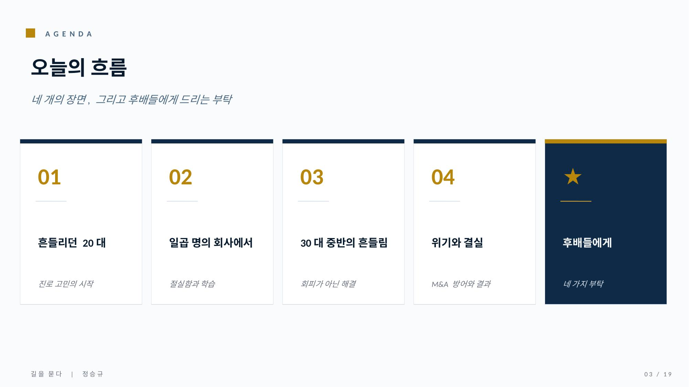
오늘은 네 개의 장면으로 30년을 풀어드리고, 마지막에 후배 여러분께 드리는 작은 부탁 네 가지로 마무리하겠습니다.
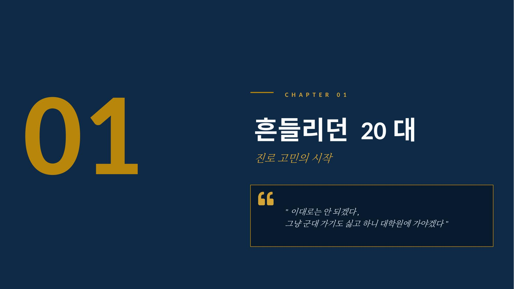
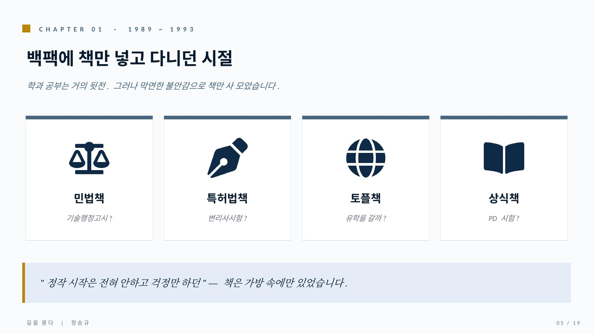
저는 사실 학교 다닐 때 모범생과는 거리가 먼 타입이었습니다. 1, 2학년 때는 친구들과 술자리, 미팅 자리만 즐겨 하면서 시간을 보냈고, 3학년 1학기까지는 학과 공부를 거의 하지 않았던 셈이에요.
그러면서도 당시 이과에서 안정적·전문적 진로로서 기술행정고시, 변리사시험 등을 생각해 보기도 했습니다. 그냥 민법책, 특허법책 한 권씩 사서 백팩에 넣고만 다녔어요. 토플책하고. 정작 시작은 전혀 안 하고 걱정만 하던.
그러다가 3학년 여름방학 즈음에 "이대로는 안 되겠다, 그냥 군대 가기도 싫고 하니 대학원에 가야겠다" 싶어서 그제서야 부족한 과목들을 재수강하고 학점을 끌어올리기 시작했습니다.
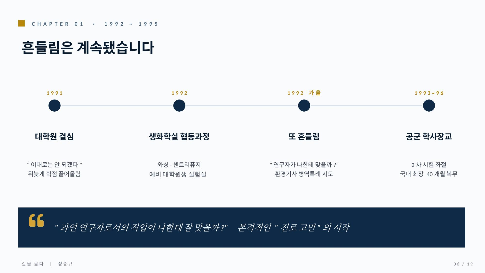
4학년 때는 우리 과 생화학실 대학원 진학을 준비했어요. 그런데 뒤늦게 마음먹다 보니 과 TO는 이미 다른 동기들이 다 차 있더라고요. 그래서 당시 협동과정 TO로라도 생화학실에 들어가 보려고, 실험실에서 와싱이며 센트리퓨지며 그런 것까지 도와가면서 준비했었습니다.
그런데 4학년 2학기에 와서 또 마음이 흔들렸어요. "과연 연구자로서의 직업이 나한테 잘 맞을까?" 하는, 본격적인 "진로 고민"의 시작이었죠. 그때 마침 새로 생겼던 환경기사 시험을 통해 병역특례로 군대를 대체하자 — 그렇게 마음을 바꿨습니다.
1차 시험에 합격하고 2차 시험까지 치른 후, 당연히 붙겠지 싶어서 병역특례 업체에 가서 면접까지 보고 출근 날짜도 잡아뒀어요. 그런데 어이없게도 2차 시험에서 떨어졌습니다. 그 길도 거기서 좌절됐죠. 결국 대학원 진학을 포기하고 공군 학사장교로 지원해서 — 국내 최장 기간이라는 40개월을 복무했습니다.
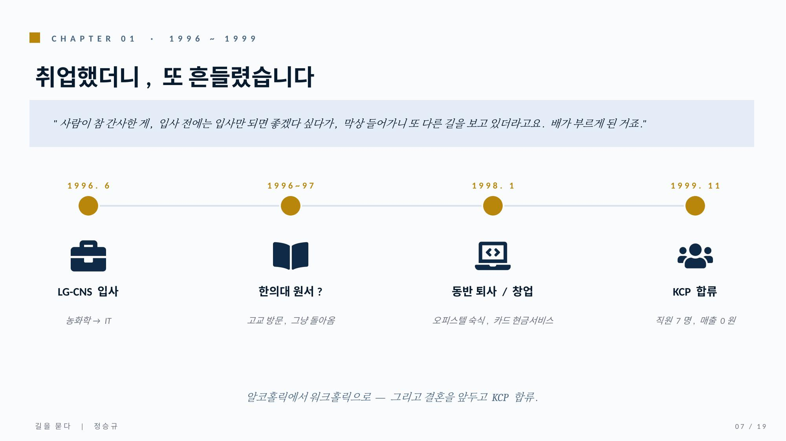
군 제대 시기에 국내 대기업 여러 곳에 지원했고, 1996년 봄에 IT업체 3군데, 삼성그룹공채, 증권사 등 5~6 여 곳에 원서를 접수했는데, 그 중 LG-CNS 한 곳만 합격하게 되었죠. 당시에 저로서는 감지덕지라고 생각했습니다.
그런데 사람이 참 간사한 게, 입사 전에는 그저 "입사만 되면 좋겠다"고 생각했는데, 막상 입사하고 나니 "이 길이 정말 맞는 걸까? 내가 대기업의 부품처럼 되는 건 아닐까?" 이런 고민이 들기 시작했습니다. 배가 부르게 된 거죠.
저랑 가장 가까웠던 LG 입사 동기 한 명이 — 서울대 철학과 89학번이었어요 — 입사한 지 1년 만에 회사를 그만두고 수능시험을 다시 준비하기 시작하더라고요. 그걸 옆에서 보면서 저도 흔들렸습니다. 한의대에 다시 들어가야 하나 진지하게 고민하다가, 정말로 수능 원서를 쓰려고 졸업한 고등학교를 찾아간 적도 있어요. 그런데 그날 마침 담임 선생님이 안 계셨습니다. 차마 "원서 쓰러 왔다"는 말을 다른 선생님께는 못 꺼내겠더라고요. 그냥 돌아왔습니다.
그렇게 계속 진로 고민만 하다가, 1998년 1월에 직장 사수와 함께 동반 퇴사해서 IT 개발 회사를 창업했습니다. 그러면서 제 인생도 좀 바뀌었어요. 그 전까지 제가 밤을 새우는 건 술 마시고 얘기하면서 새우는 거였는데, 이제는 일하면서, 코딩하면서 밤을 새우게 됐습니다. 알코홀릭에서 워크홀릭으로 변신했다고나 할까요.
두 명이서 창업한 회사는 마치 동아리 같았습니다. 정말 재미있었어요. 그런데 문제는 — 먹고사는 게 안 됐습니다. 직원도 4~5명까지 늘어나면서 직원들 월급주는 것도 벅찼습니다. 결혼을 하기로 마음먹고 가장으로서 책임져야 하는 상황이 되어서, 동업하던 선배님께는 죄송했지만 창업한 회사를 퇴사해서 KCP라는 스타트업에 합류하게 되었습니다.
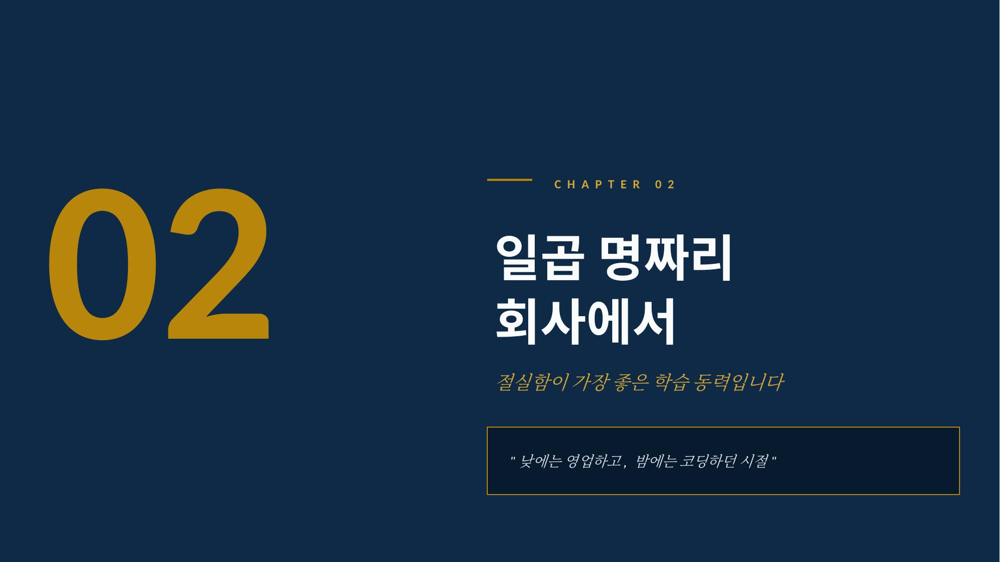
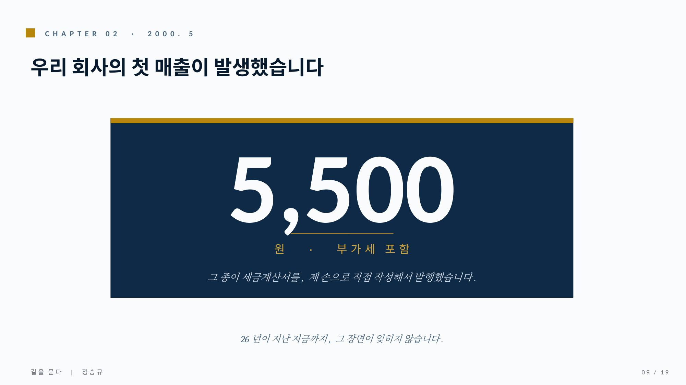
1999년 11월, KCP에 입사했을 때 임직원은 일곱 명이었고, 사실상 개점휴업 상태였습니다. 인터넷 전자결제 서비스를 개발·준비 중이었고, 제가 첫 번째로 한 일이 연간 사업계획을 작성하는 일이었습니다.
회사소개서, 제안서, 계약서도 처음으로 만들고, 낮에는 고객사에 가서 영업하고, 오후 5시쯤 회사에 돌아오면 밤에는 개발을 했습니다. 작은 회사에서는 한 사람이 여러 역할을 해야 하는 상황이었죠.
그렇게 서비스를 오픈하고, 첫 번째 고객과 계약하고 2000년 5월에 드디어 우리 회사의 첫 매출이 발생했습니다. 5,500원이었어요. 부가세 포함 5,500원. 그 종이 세금계산서를 제 손으로 직접 작성해서 발행했습니다.
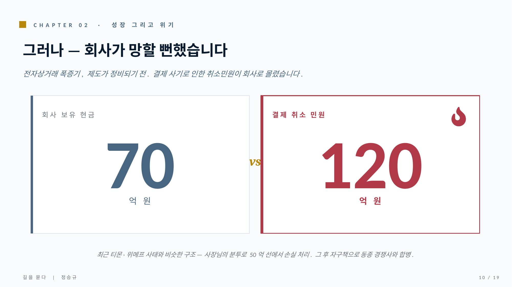
그렇게 시작한 회사는 당시 인터넷과 전자상거래의 폭발적인 성장과 함께 크게 성장해 갔습니다. 실적이 매월 두 자릿수 씩 늘어 갔죠.
그러나 좋은 상황이 그리 오래 가진 못하더라고요. 당시 전자상거래가 크게 늘어나면서 제도가 아직 정착되지 못한 상황이다 보니 온라인 신용카드 결제 사기가 늘어나게 된 겁니다. 상거래업자가 결제만 받아 놓고 배송·서비스를 이행하지 않고 사기를 치고 도망가거나 도산하면서, 그 소비자 손실을 한꺼번에 우리회사가 안게 된 상황이 발생했습니다. 최근의 티몬·위메프 상황과 비슷한 거죠.
당시 회사가 가진 현금이 70억 원 정도였는데, 취소민원액이 120억 원이 넘었습니다. 회사가 망할 상황이었죠.
그 당시 사장님의 노력과 해결책으로 간신히 회사는 50억 원 선에서 손실을 처리할 수 있었습니다. 내상을 크게 입은 우리 회사는 자구책의 일환으로 당시 우리보다 좀 더 규모가 큰 동종 경쟁사와 합병을 추진하게 됩니다.
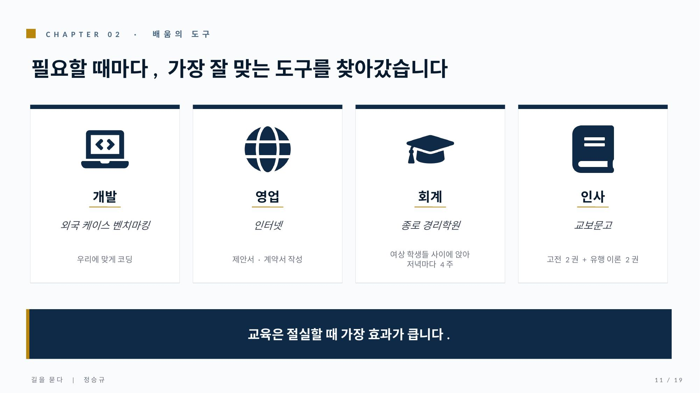
합병 후 인력도 늘었고, 한 사람이 여러 일을 다 맡던 시기를 지나서, 업무별로 경력자들이 많이 구성되었고 체계가 분화되어 갔습니다. 그 변화 속에서, 저는 또 한 번 진로 고민이 생겼습니다. 개발도 저보다 잘하는 전문가들이 채워지고, 영업도 경력자들이 많게 되다 보니, 그 사이에서 제 영역이 점점 애매해지는 상황이 된 거예요.
그래서 자의 반 타의 반으로, 회사 안에서 제 역할이 인사와 재무를 포함한 경영 관리 업무로 바뀌게 됐습니다. 그리고 여기서 제가 정말 절실한 상황에 이르게 됩니다. 농화학과를 나온 사람이 회계를 알 리가 없죠. 그런데 당장 다음 주부터 그 일을 해야 하는 상황이었습니다.
그래서 종로의 한 학원을 찾아갔습니다. 그곳은 여상 2-3학년 학생들이 졸업 전에 자격증을 따러 다니는 학원이었습니다. 저는 그때 30대 중반이었어요. 30대 중반의 회사 간부가, 열여덟 열아홉 살 여학생들 사이에 앉아서 저녁마다 4주간 수업을 들었습니다. 솔직히 처음에는 좀 머쓱했습니다. 그런데 신기한 게, 정말 절실하니까 그게 부끄럽지가 않더라고요. 다음 날 출근해서 바로 써야 하는 지식이었으니까요.
교육은 절실할 때 가장 효과가 큽니다. 학교에서 배울 때처럼 "언젠가 쓰겠지" 하고 듣는 거랑, "내일 당장 써야 한다" 하고 듣는 건 완전히 다른 학습이더라고요.
인사 업무는 또 사정이 달랐습니다. 마땅한 교육 과정을 못 찾아서 주말에 교보문고에 가서 인사 관련 고전 두 권, 그 당시 유행하던 이론 두 권 — 그렇게 네 권을 사서 읽었습니다. 솔직히 다 읽고 나서도 뭔가 마뜩지는 않더라고요. 그런데 가만히 생각해 보니, 인사라는 게 원래 다들 잘 모르는 영역이지 않습니까. 그래서 "이 정도면 그래도 중간은 가겠다" 싶었습니다.
여러분 지금 생물, 화학 등을 공부하고 계시죠. 그 전공 지식이 평생 여러분의 무기가 될 수도 있고, 어느 순간 전혀 다른 분야로 가게 될 수도 있습니다. 어느 쪽이든 좋습니다. 다만 한 가지 — 자기 분야 바깥의 것을 배워야 할 때, 자존심이나 체면이 발목을 잡지 않도록 하세요.
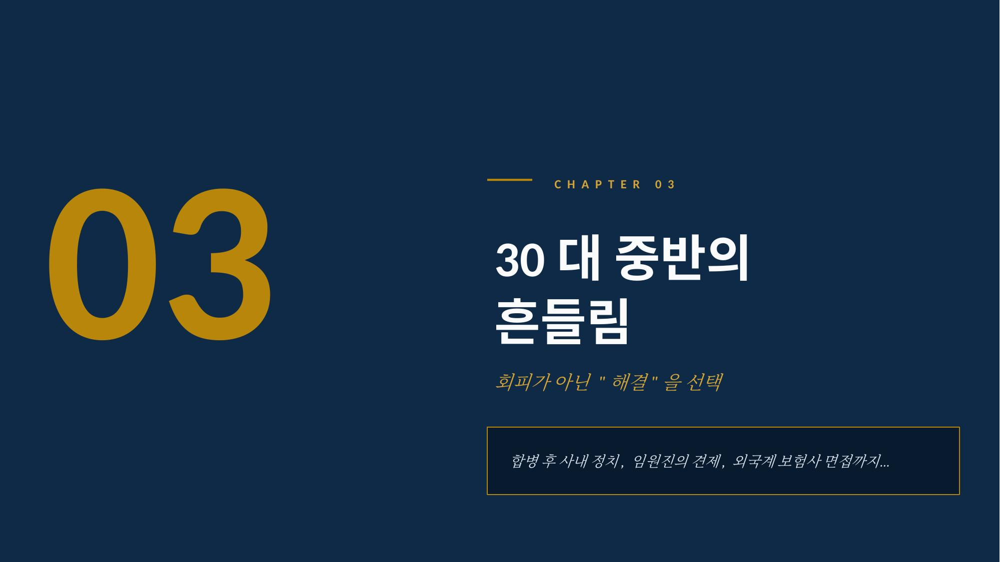
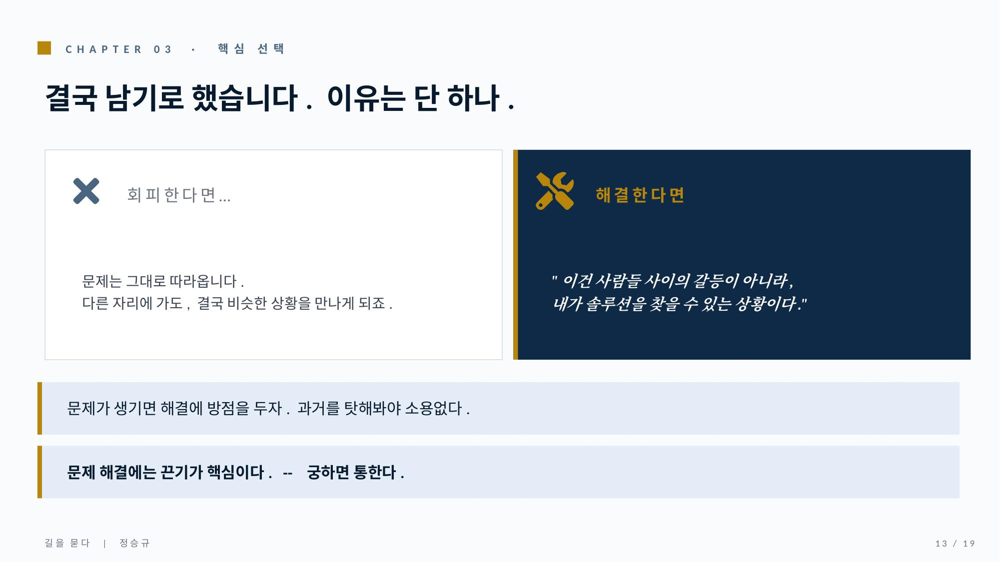
회사는 합병을 한 이후, 두 회사 출신의 조직이 섞여 있었습니다. 그러다 보니 사내 정치가 극심했고, 임원진 중 상당수가 자신들의 단기적 이익을 추구하려고 했어요. 그러다 보니 경영 관리를 맡고 있던 저를 눈엣가시처럼 여기게 됐고, 저를 내보내려고 지속적으로 시도했고, 저는 많은 스트레스를 받았습니다.
그때 저는 "이 회사를 나가야 하나, 아예 다른 업종으로 옮겨야 하나" 진지하게 고민했습니다. 그 당시 연봉을 많이 준다고 소문난 외국계 보험사에 면접까지 보러 갔었어요.
그러한 고민 결과 저는 남기로 결정했습니다. "이 상황을, 이 문제를 회피하지 말고 정면으로 풀어보자. 찾아보면 방법이 있을 거다." 그런 마음이 들었어요. "이것은 내가 솔루션을 찾을 수 있는 상황이다." 이렇게 보기로 한 겁니다.
"문제가 생기면 해결에 방점을 두자. 과거를 탓해봐야 소용없다."
"문제 해결에는 끈기가 핵심이다. 궁하면 통한다."
막혔다고 생각한 일도, 포기하지 않고 계속 두드리다 보면 어느 순간 길이 보이더라고요. 외부에 답을 구하기보다는, 스스로 공부하고 부딪혀가면서 길을 찾으려는 자세.
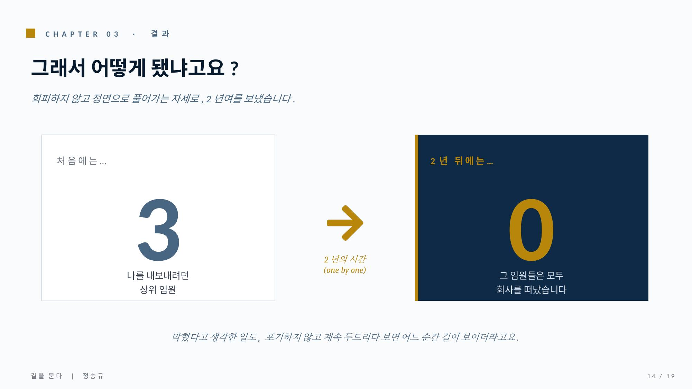
그래서 어떻게 됐냐고요? 이런 자세로 2년여간에 걸쳐 저를 내보내려 했던 저보다 상위 임원 3명이 회사를 나가게 되었습니다. 한 명씩 one by one.
만약 그때 제가 회사를 나갔다면, 현재의 저는 없었을 겁니다. 그리고 우리 회사도 없었거나, 지금과는 많이 다른 모습이 되어 있었을 거예요.
후배 여러분께도 말씀드리고 싶습니다. 살다 보면 "이 자리에서 더는 못 견디겠다" 싶은 순간이 옵니다. 그럴 때 너무 성급하게 짐을 싸지 마세요. 정말로 옮겨야 할 자리도 있지만, 많은 경우 그 순간을 한 번 더 생각해 보고 — "이게 회피해야 할 상황인가? 아니면 내가 문제를 해결할 수 있는 상황인가?" — 이렇게 자문해 보시기 바랍니다.
그렇게 한 번, 두 번 부딪혀 가다 보면, 여러분의 문제 해결 능력이, 그러니까 그런 체력이 점점 강화될 겁니다.
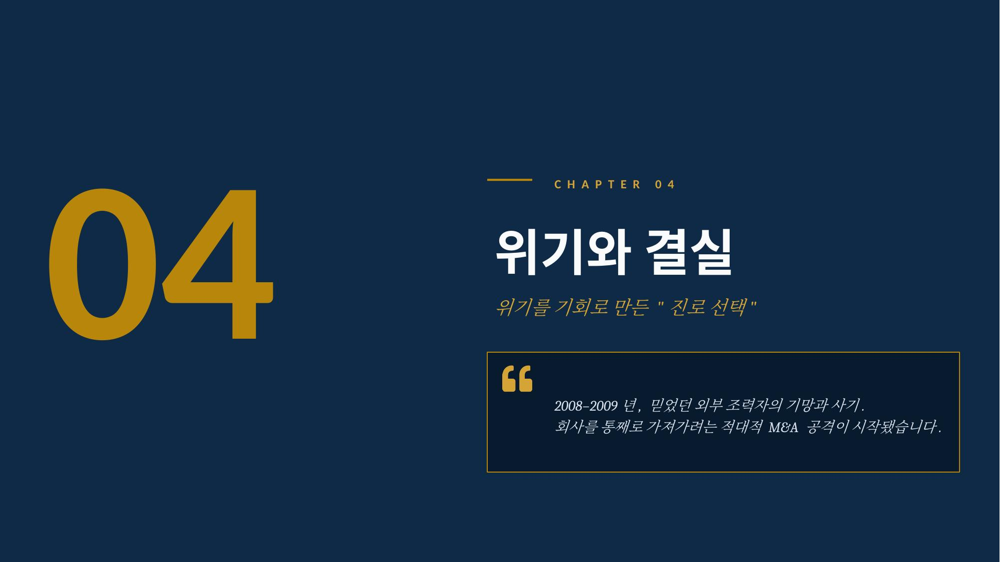
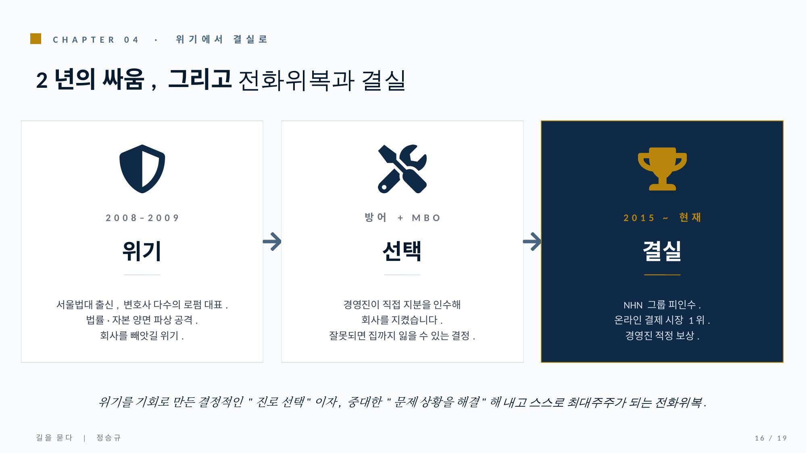
2008년에서 2009년 사이, 우리 회사는 외부로부터 적대적 M&A 공격을 받았습니다. 믿었던 외부 조력자가 저를 포함한 경영진을 기망하고 사기를 감행하면서, 회사를 통째로 가져가려는 시도였어요.
상대는 만만한 사람이 아니었습니다. 서울법대 출신으로, 변호사를 여럿 거느린 로펌의 대표였어요. 법률적으로도, 자본으로도 파상공격이 들어왔고, 우리 경영진은 회사를 통째로 뺏길 위기에 몰렸습니다.
그때 저를 포함한 경영진이 그 공격을 방어하기 위해서 직접 회사 지분을 인수해서 우리 지분을 점차 확대해 나갔습니다. 그런데 이게 사실 — 일이 잘못되면 개인적으로 파산할 수도 있는 선택이었어요. 집도 잃고, 말 그대로 길거리에 나앉을 수도 있는 결정이었습니다.
그렇게 2년여 동안 싸웠습니다. 결국 우리는 적대적 M&A를 막아내는 데 성공했고, 그 과정에서 우리 경영진은 결과적으로 MBO(Management Buy-Out)를 통해 — 전문경영진에서 회사의 최대주주가 됐습니다.
저는 이때의 일이, 위기를 기회로 만든 결정적인 "진로 선택"이자, 중대한 "문제 상황을 해결"해 낸 과정의 결실이었다고 생각합니다.
그 이후 사업은 탄탄한 성장을 거듭했고, 2015년경에 NHN 그룹에 피인수되었습니다. 그룹과의 시너지를 통해 온라인 결제 시장에서 확고한 1위를 차지하게 되었고, 회사로서도 지속적인 발전을 이어가게 됐고, 경영진도 그동안의 노력에 대한 적정한 보상을 얻게 되는 결실이 있었습니다.
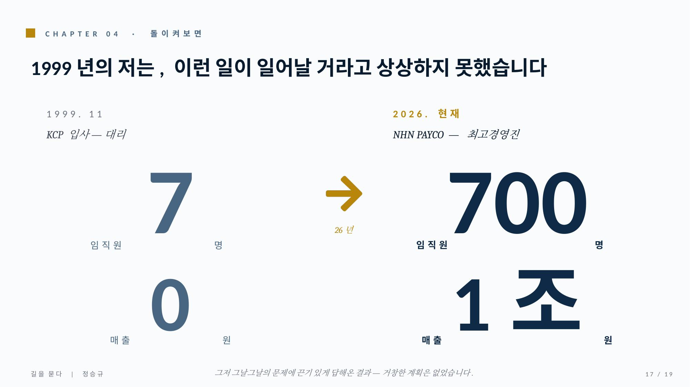
이 이야기를 자랑하려고 꺼낸 게 아닙니다.
7명짜리 작은 회사에 들어갔던 1999년의 저는, 26년 후 이런 일들이 일어날 거라고 당시에는 전혀 상상하지 못했습니다. 입사할 때 "전자상거래, 전자결제가 앞으로 유망할 것이다"라는 정도의 생각은 있었어요. 그런데 솔직히 말씀드리면, 5년, 10년 뒤를 내다보는 시야 같은 건 없었습니다. 그게 진실이에요.
회사 일이라는 건 막상 들어가 보면 정말 구체적이고 사소한 일의 연속이었습니다. 저는 그때 그저 당면한 일들을 하나씩 배워가고, 수행하고, 또 다음 일로 넘어가는 과정을 반복했을 뿐이에요.
외국 개발 케이스를 벤치마킹하면서 우리에 맞게 프로그램을 코딩하고, 영업에 필요한 제안서와 계약서를 인터넷을 찾아가며 만들었고, 회계가 필요하면 회계 학원을 갔고, 인사 지식이 필요하면 서점에 갔습니다. 그리고 문제 상황이 발생하면 고민하면서 해결책을 찾아갔습니다.
긴 시간을 두고 보면, 그렇게 쌓인 작은 선택들이 결국 어딘가로 데려다줍니다. 처음부터 "10년 후에 이걸 하겠다" 같은 거창한 계획이 있어서가 아니라, 그날그날 마주한 문제에 끈기 있게 답하다 보니 여기까지 온 것 같아요.
진로 고민은 20대만 하는 게 아닙니다. 평생 하는 것 같습니다.
저는 여러분 나이에 진로 고민을 했고, 30대에도 했고, 40대에도 했고, 솔직히 지금도 합니다. 그래서 지금 진로가 안 보인다고, 흔들린다고 너무 자책하지 마세요. 그건 여러분이 부족해서가 아니라, 그냥 사람이 살아가는 자연스러운 모습입니다.
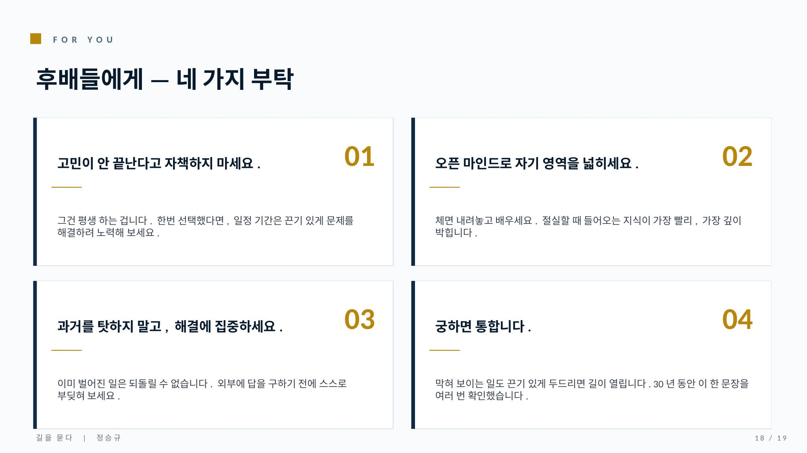
이제 정리하면서, 후배 여러분께 네 가지를 말씀드리고 싶습니다. 거창한 인생 교훈이 아니라, 30년을 살아본 선배의 작은 부탁이라고 생각해 주세요.
첫째, 진로 고민이 안 끝난다고 자책하지 마세요. 그건 평생 하는 겁니다. 다만 한번 선택했다면, 일정 기간은 끈기 있게 문제를 해결하려 노력해 보세요.
둘째, 오픈 마인드로 자기 영역을 넓혀가세요. 절실할 때 배우는 게 가장 빨리, 가장 깊이 들어옵니다.
셋째, 문제가 생기면 과거를 탓하지 말고 해결에 집중하세요. 외부에 답을 구하기 전에, 스스로 부딪혀 보세요.
넷째, 궁하면 통합니다. 막혀 보이는 일도 끈기 있게 두드리면 길이 열립니다.
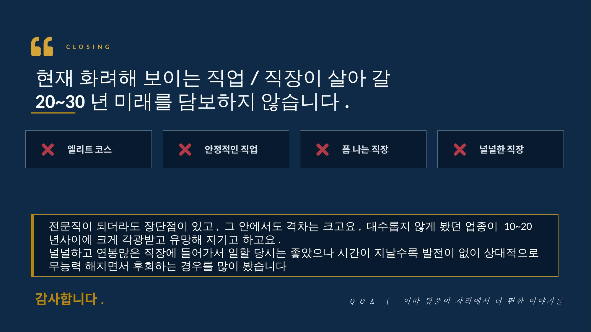
저는 우리 학과 전공과는 다른 진로를 선택한 사람입니다. 한때는 그게 마음에 걸리기도 했어요. 서울대씩이나 나와서 전공과는 다른 직업을 선택한 게 일종의 패배 같기도 하고, 우리 전공에 대해 미안한 마음도 들고요.
그런데 지금 돌아보면 — 학교에서 보낸 그 4년이 그냥 사라진 게 아니더라고요.
예를 들면 이런 게 있어요. 제가 3학년 여름방학 무렵부터 대학원 진학을 마음먹고, 그동안 부족했던 과목들을 한 학기와 여름 계절학기에 몰아서 들었던 시기가 있었습니다. 생화학, 미생물학, 분자생물학, 세포생물학 — 이런 과목들을 거의 동시에 파고들었어요. 그때 처음으로 "아, 이제 뭔가 좀 알 것 같다", "그림이 보인다" 하는 느낌이 들었습니다.
지금 돌아보면, 그때의 그 느낌이 — 회사에 들어가서 일에 푹 빠져 있을 때 느끼는 감각과 굉장히 비슷하더라고요. 분야는 전혀 달랐는데, 뭔가에 깊이 들어갔을 때 머릿속에서 그림이 그려지는 그 경험은 똑같았던 거죠. 학과 공부에서 그런 몰입의 감각을 한번 맛본 게 — 나중에 일에 빠져드는 감각의 사전 경험이 되어주지 않았나, 그렇게 생각합니다.
그리고 직업·진로를 선택하는데 있어서 돌이켜보면 30대 중반까지도 이 당시 때까지의 진로 고민은 "엘리트 코스" "안정적인 직업" "겉으로 좋아 보이는 직업" "폼 나보이는 직장" "한방에 자리잡기" "편안하고 널널한 직장" 이런 방향이었던 것 같습니다.
그러나 지나고 보니 그런 직업과 직장은 결코 존재하지 않는 것 같습니다. 전문직이 되더라도 장단점이 있고, 그 안에서도 격차는 크고요. 대수롭지 않게 봤던 업종이 10~20년 사이에 크게 각광받고 유망해지기도 합니다. 널널하고 연봉 많은 직장에 들어가서 일할 당시는 좋았으나, 시간이 지날수록 발전이 없이 상대적으로 무능력해지면서 후회하는 경우를 많이 봤습니다.
현재 화려해 보이는 직업·직장이, 여러분이 앞으로 살아갈 20~30년 미래를 담보하지 않습니다.
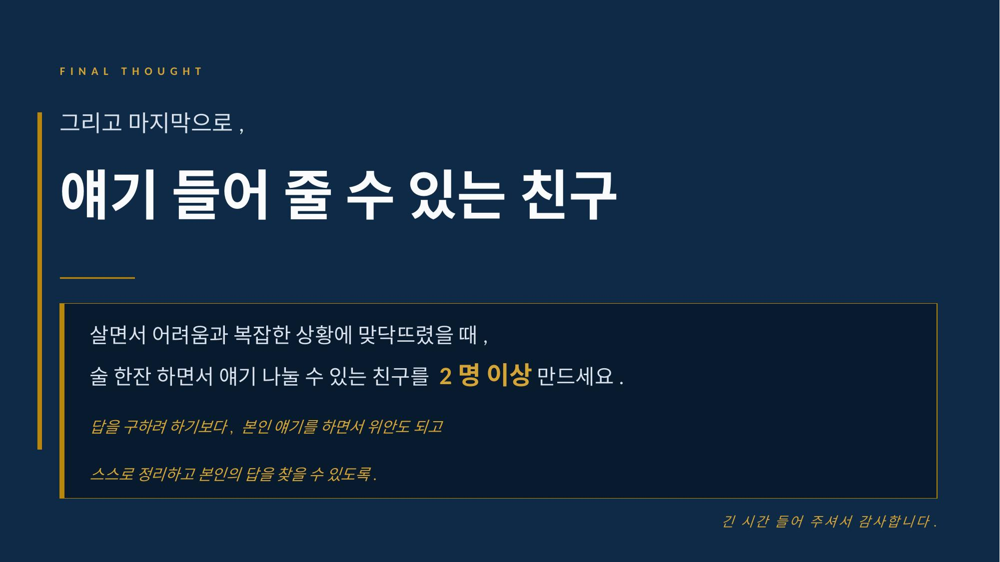
그리고 마지막으로, 한 가지만 더 말씀드릴게요.
살면서 어려움과 복잡한 상황에 맞닥뜨리는 순간이 옵니다. 그럴 때, 술 한잔 하면서 편하게 얘기 나눌 수 있는 친구를 2명 이상 만들어 두세요.
그 친구들에게 답을 구하려고 하기보다는 — 본인 얘기를 꺼내놓는 그 자체로 위안이 되고, 말하다 보면 스스로 정리가 되고, 결국 본인의 답을 찾게 되는 경우가 많습니다.
길게 들어 주셔서 감사합니다. 이따 뒷풀이 자리에서 더 편한 자리에서 못다 한 이야기 나누면 좋겠습니다. 감사합니다.